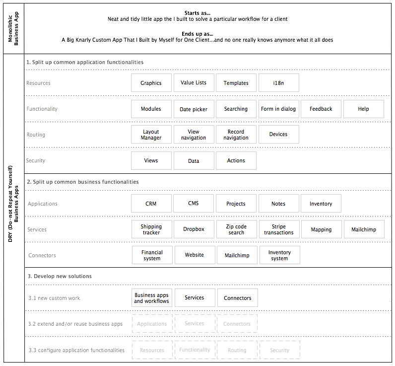

Architecture
Solutions created with Kabootit are made up of many reusable pieces and a few custom pieces. Reusable pieces can optionally be connected together enabling many Kabootit applications to be easily upgraded and maintained. (See [[GIT]].)
The difference between a monolithic solution and a DRY (Do not Repeat Yourself) Kaboot solution is illustrated as follows:

Concepts
Organizing projects into dedicated business or application functionalities is achievable right now with the various plumbing abilities of Wakanda server (xhr, request handlers, RCP, REST, etc).
The trick is to wire projects up in such a way that they talk to each other through well defined interfaces so you don’t end up with spaghetti code all over the place. Done correctly, you can even achieve a git setup (with submodules) where you can keep the structure and logic of projects connected between many solutions while keeping the data localized. A few steps and we have a new client solution up and running from repo to developer machines through to staging server with all common projects linked in.
Benefits
Major benefits are achieved from this layers structure.
- updating, modifying or improving the functionality in one layer does not directly affect other layers
- interfaces between layers is simple in expectations and returns
- security is implied and strengthened by restricting layers to interact only with their adjacent layers
- debugging issues is an ordered process
- you can use any database just as easily as Wakanda’s
- easy to implement complex transactions
- freed from event chaining/firing headaches
- runtime security management per SaaS
Issues with monolithic apps
Monolithic apps are not inherently bad. They just become bad when you try to make them scale and do more than a few things:
- bolting on security, visibility and functionality to core classes via all the various meta data points is repetitive
- data format in structured wakanda classes doesn’t usually mirror UI representation and thus needs to be “marshaled”
- sometimes the client needs to send multiple async calls to get something done
- wakanda’s default REST URL structure not necessarily what a widget sends
- wakanda’s default REST is hard to lock down granularly and know what is going on and who can do what and see this or that
- multi project data access only exposes data, not methods
By “bad” I mean “creates technical debt”, “slow”, “spaghetti code”, “hard to maintain”, “hard to debug”, “lots of downtime”, “untestable”, “insecure”, etc. Technical debt can be managed up to a certain point in monolithic apps with various techniques such as refactoring, brute force, and weekends spent at the office.
[]: Kabootit_DRY_architecture.png